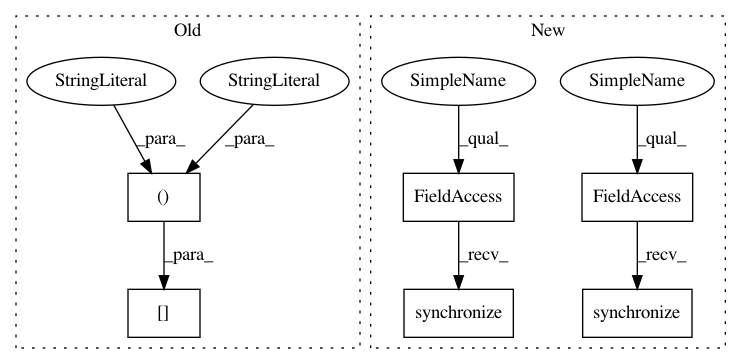

35374bebada9b1d9bb50a48bce8cf939d9c6baf1,train.py,,train,#Any#,27
Before Change
fc_feats, att_feats, labels, masks = tmp
optimizer.zero_grad()
loss = crit(model(fc_feats, att_feats, labels)[:, 1:], labels[:,1:], masks[:,1:])
loss.backward()
utils.clip_gradient(optimizer, opt.grad_clip)
optimizer.step()
After Change
data = loader.get_batch("train")
print("Read data:", time.time() - start)
torch.cuda.synchronize()
start = time.time()
tmp = [data["fc_feats"], data["att_feats"], data["labels"], data["masks"]]
tmp = [Variable(torch.from_numpy(_), requires_grad=False).cuda() for _ in tmp]
fc_feats, att_feats, labels, masks = tmp
optimizer.zero_grad()
loss = crit(model(fc_feats, att_feats, labels), labels[:,1:], masks[:,1:])
loss.backward()
utils.clip_gradient(optimizer, opt.grad_clip)
optimizer.step()
train_loss = loss.data[0]
torch.cuda.synchronize()
end = time.time()
print("iter {} (epoch {}), train_loss = {:.3f}, time/batch = {:.3f}" \
.format(iteration, epoch, train_loss, end - start))
In pattern: SUPERPATTERN
Frequency: 4
Non-data size: 6
Instances
Project Name: ruotianluo/ImageCaptioning.pytorch
Commit Name: 35374bebada9b1d9bb50a48bce8cf939d9c6baf1
Time: 2017-02-13
Author: rluo@ttic.edu
File Name: train.py
Class Name:
Method Name: train
Project Name: ruotianluo/self-critical.pytorch
Commit Name: 35374bebada9b1d9bb50a48bce8cf939d9c6baf1
Time: 2017-02-13
Author: rluo@ttic.edu
File Name: train_tb.py
Class Name:
Method Name: train
Project Name: ruotianluo/ImageCaptioning.pytorch
Commit Name: 35374bebada9b1d9bb50a48bce8cf939d9c6baf1
Time: 2017-02-13
Author: rluo@ttic.edu
File Name: train.py
Class Name:
Method Name: train